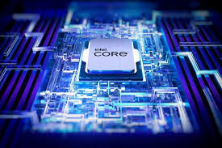

Procesors (CPU) ir viena no svarīgākajām datora sastāvdaļām, kas tieši ietekmē veiktspēju un lietošanas pieredzi. Tā izvēle būtiski ietekmē jūsu darba produktivitāti un datora spēju tikt galā ar uzdevumiem. Lai izdarītu pārdomātu izvēli, īpaša uzmanība jāpievērš divām galvenajām īpašībām – kodolu skaitam un procesora sērijai.
Cik kodolu nepieciešams procesoram?
Procesora efektivitāte un iespējas lielā mērā ir atkarīgas no kodolu skaita. Tomēr optimāla izvēle būs atkarīga no jūsu vajadzībām:
4 kodoli: Piemēroti ikdienas uzdevumiem, piemēram, interneta pārlūkošanai, e-pasta lasīšanai, video skatīšanai un Office programmu lietošanai. Laba izvēle vienkāršiem darbiem.
6 kodoli: Universāls variants, kas piemērots arī mērenām prasībām – datorspēlēm, grafiskajai apstrādei un vidēji sarežģītiem uzdevumiem. Šie procesori ir populārākie cenas un kvalitātes ziņā.
8 kodoli: Piemēroti video rediģēšanai, sarežģītiem grafiskajiem darbiem un smagākiem uzdevumiem, piemēram, 3D modelēšanai.
12 kodoli un vairāk: Ideāli profesionāliem darbiem, piemēram, lielu datu apstrādei, smagu programmu darbībai un augstas kvalitātes spēļu spēlēšanai.
Procesora sērijas – Intel un AMD

Ražotāji piedāvā procesorus ar atšķirīgu jaudu, veiktspēju un cenu.
Intel procesori:
Core i3: Budžeta variants vienkāršiem uzdevumiem, piemēram, tīmekļa pārlūkošanai un HD video skatīšanai.
Core i5: Universāla izvēle lietotājiem, kuriem nepieciešams balanss starp veiktspēju un cenu. Piemērots 4K satura rediģēšanai un mērenām
Core i7: Spēj tikt galā ar daudzuzdevumu režīmu, grafiskām programmām un augstas veiktspējas spēlēm.
Core i9: Jaudīgākais variants profesionāļiem – piemērots sarežģītiem darbiem, kā arī profesionālām spēlēm un video apstrādei.
Core Ultra: Intel jaunākās paaudzes procesori, kas piedāvā augstu veiktspēju un efektivitāti – ideāli piemēroti spēļu entuziastiem, satura veidotājiem un profesionālām lietojumprogrammām.
AMD procesori:
Ryzen 3: Ikdienas lietošanai un izklaidei.
Ryzen 5: Spēlēm un grafiskajiem darbiem.Ryzen 5: Spēlēm un grafiskajiem darbiem.
Ryzen 7/9: Profesionāliem darbiem un augstas prasības spēlēm.
FX/Athlon/Sempron: Piemēroti lietotājiem ar nelielām prasībām – tīmekļa pārlūkošanai un teksta apstrādei.
Papildu padomi
Izvēloties procesoru, pievērsiet uzmanību arī tā takts frekvencei (GHz), savienojamībai ar mātesplati un enerģijas patēriņam. Intel procesori mēdz būt jaudīgāki, savukārt AMD bieži vien piedāvā labāku cenas un veiktspējas attiecību.
Pareiza procesora izvēle nodrošinās, ka jūsu dators pilnībā atbilst jūsu vajadzībām un budžetam.